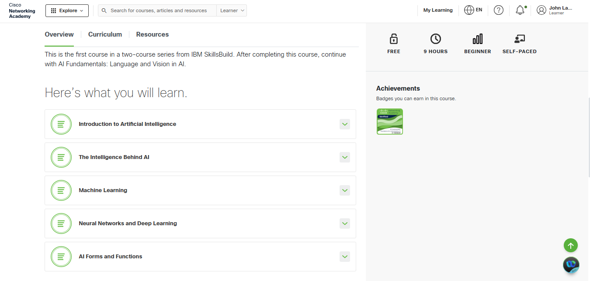
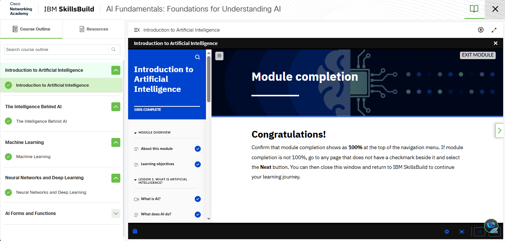
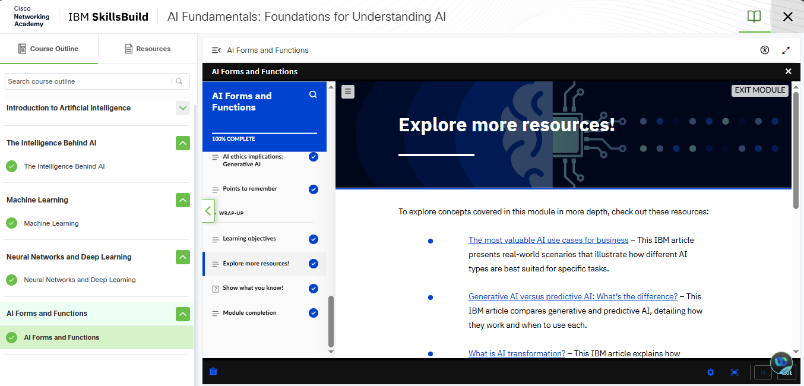
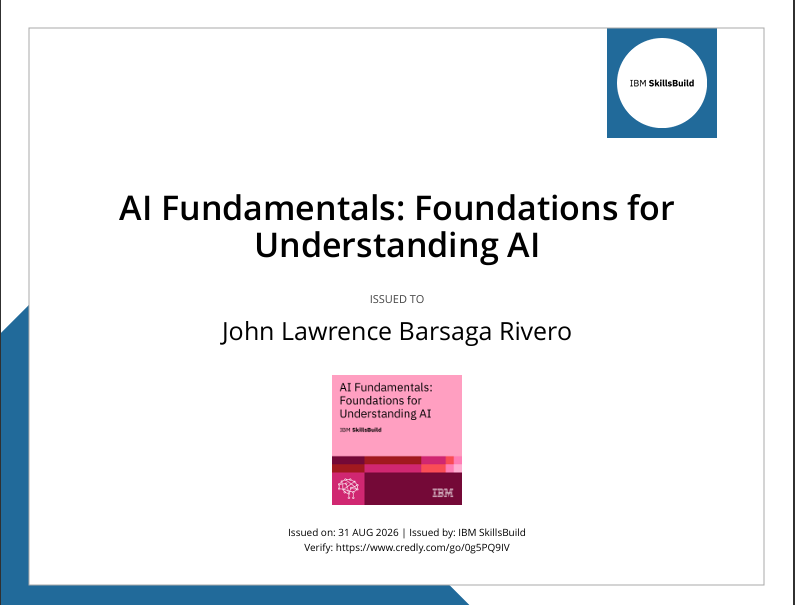
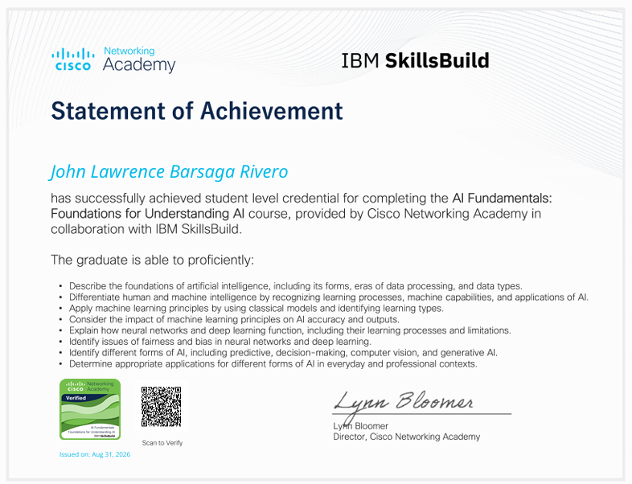
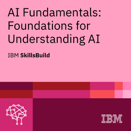
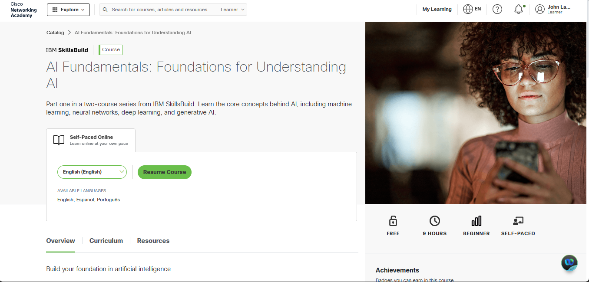

LEARNINGS



BADGE & CERTIFICATE

View PDF
View PDF
View My Badge.png) Verify My Badge
Verify My Badge

I completed the AI Fundamentals: Foundations for Understanding AI course from Cisco Networking Academy in collaboration with IBM SkillsBuild on August 31, 2026. This course helped me understand the basic concepts of Artificial Intelligence and how AI is being used in different areas of technology and everyday life.
During the course, I learned about the foundations of AI, machine learning, neural networks, deep learning, and different forms of AI. I learned how AI can recognize patterns, process information, and perform tasks that normally require human intelligence. The course also helped me understand the difference between human intelligence and artificial intelligence.
I also learned about machine learning principles, neural networks, and deep learning. Another important topic was the issue of fairness and bias in AI. I learned that AI systems need to be developed and used responsibly because the data and methods used to train them can affect their results.
The course included different lessons, activities, and modules that helped me understand the topics better. After completing the course, I received two badges as recognition of my learning and achievement. These badges motivated me to continue learning more about Artificial Intelligence and its applications.
Overall, completing this course was a valuable experience for me. I gained a better understanding of how AI works, where it can be applied, and why responsible use of AI is important. The knowledge I gained from this course can help me in my studies, future projects, and in understanding the growing role of AI in technology.




View PDF
View PDF
View My Badge
Verify My Badge